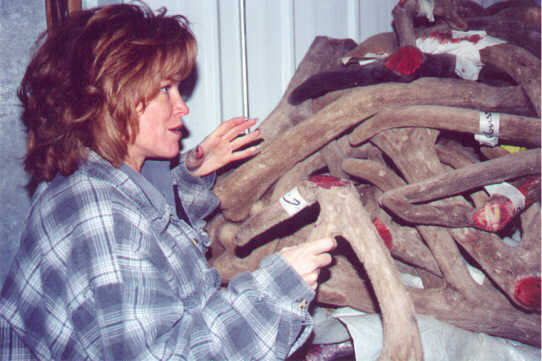
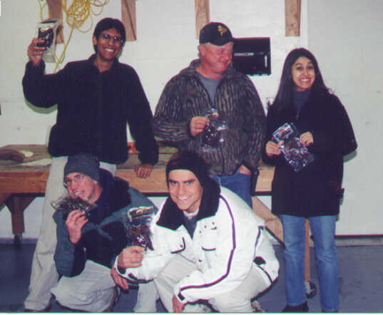
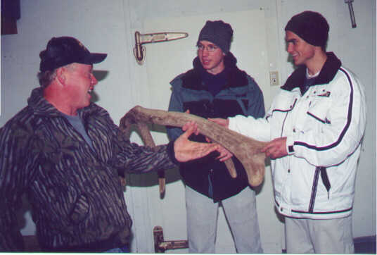

In October 2000 I took four
students to visit the Schreiner Elk Farm on the East Butte Road in Menan, Idaho. Ten
miles west of Rexburg, the farm includes 720 acres on the west side of the Snake River and
the east side of the R Mountain and Menan Butte.
Here we met Gary and Missy Kelly, farm managers. Both Gary and Missy were personable
and kind as they graciously showed us around the farm. Although Gary had already put
in a full day, and although we were interrupting his supper, he took time well into the
evening to help us understand the business of elk farming. The couple was extremely
knowledgeable and competent in their understandings and explanations. Shown below,
Missy explains the importance of elk velvet.
|

| Shown next is Gary Kelly
with four BYU-Idaho students. Gary gave each student a package of elk jerky and a
package of elk sausage. From left to right, are: (back row) John Espinosa, Gary
Kelly, Sylvia Dimitrova, (front row) Blaine White and Scot Saari. |

| Gary Kelly also helped
Blaine White and Scot Saari understand the characteristics of elk velvet. |

During the evening when
riding around the ranch with Gary in his pickup, I ask, "Do you have any problem with
mountain lions?"
Gary said, "Last July two mountain lions, probably a mother and her cub, forced 98
head of yearlings into a corner. The elk stacked themselves against the fence and 33
escaped. We rounded up all the elk but lost five animals."
"How did you know it was cougars? Did you see them?"
"No, I didn't, but I know lion tracks. It was cougars in our pasture. My
neighbor, Don Mickelsen told me he has seen mountain lions in the neighborhood."
"How do you feel about having lions on your farm?" I asked.
"I don't like it. Cougars don't belong in our back yards."
We eventually completed our visit at the Schreiner Elk Farm and returned to Rexburg
feeling thankful for Missy and Gary Kelly. They could not have been better hosts.
Yet we wondered about the problems associated with wild predators which now seem
too close for safety and comfort.
|
|
|